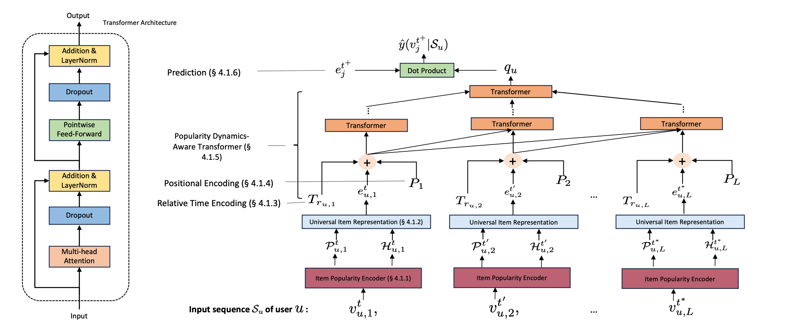
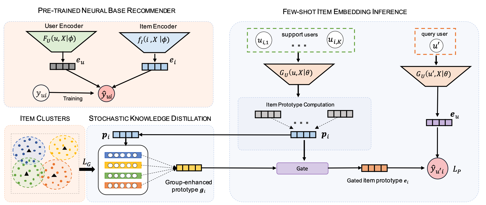
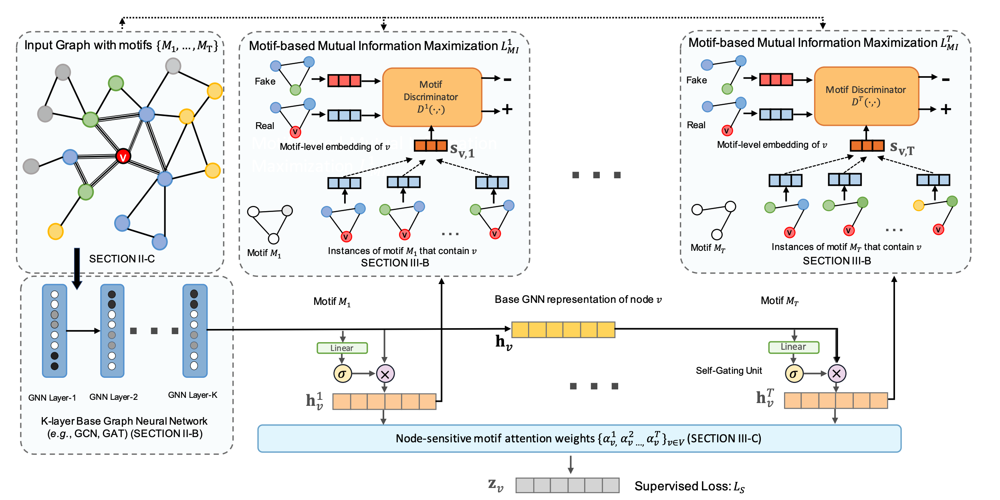

Hi, I’m Junting Wang.
I’m a third year Ph.D. student at Department of Computer Science, University of Illinois at Urbana-Champaign, working with Prof. Hari Sundaram. I received both my B.S. and M.S. in Computer Science from University of Illinois at Urbana-Champaign in 2020 and 2022.
I was also an Applied Scientist Intern at Entity Resolution (2022) and International Machine Learning (2024) team @Amazon.
My broader research interests include recommender systems and graph neural networks, with a particular focus on the challenges of sparsity and trustworthiness of these models. Currently, I’m also exploring LLM-enhanced recommendation systems and causal representation learning.
Contact me via:
📧 Mail: jtwang.98[AT]gmail.com or junting3[AT]illinois.edu
What's new:
Selected Publications (Google Scholar)
|  |
"A Pre-trained Sequential Recommendation Framework: Popularity Dynamics for Zero-shot Transfer"
Junting Wang, et al. In RecSys'24. [PDF] |
|  |
"ProtoCF: Prototypical Collaborative Filtering for Few-shot
Recommendation"
Junting Wang, et al. RecSys'21. [PDF] |
|  |
"Beyond Localized Graph Neural Networks: An
Attributed Motif Regularization Framework"
Junting Wang, et al. In ICDM'20. [PDF] |
{kind=link}
{kind=link}
{kind=link}
Fun Facts
- 🎹 I’ve been playing the piano since I was four years old, and I still make an effort to practice daily. I also compose my own music from time to time.
- 📸 I took up photography in 2020 during the pandemic and share some of my photos in the gallery here.
- 💪 I enjoy lifting weights and have been focused on powerlifting since 2018. My goal is to compete in a powerlifting competition before I graduate.